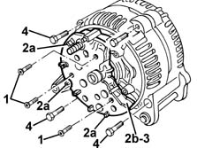
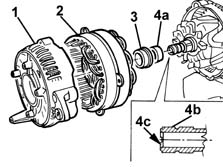
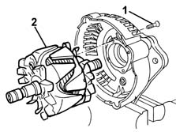
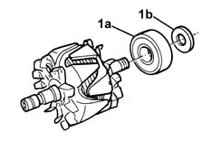
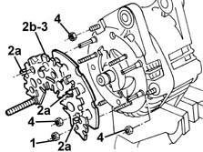
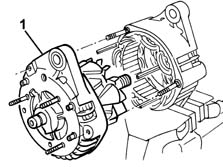
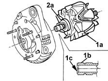
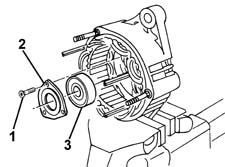

5530A18 alternator - dismantle and rebuild - wash and check including component replacement if necessary
- Path
- Procedures > 55 ELECTRICAL EQUIPMENT > 5530 CURRENT GENERATOR > 5530A alternator and components > 5530A18 alternator - dismantle and rebuild - wash and check including component replacement if necessary
- Kind
- repair procedure (removal / refitting; the operation number is the code)
- Applies to
- all engines; all production periods
- Interactive page
- https://sloeber94.github.io/elrnDB-fMltpl/en/#/2891906
Applies to: engines: 1.6 16v; all production periods
 Removing
Removing
 Refitting
Refitting5530A30 alternator pulley or fan - r+r with alternator removed
5530A24 alternator voltage regulator - r r with alternator removed
1. Undo the bolts fixing the diode rectifier plate.
2. Using a metal-cutter, open the electrical connections (2a) retaining the diode rectifier plate (2b).
3. Remove the diode rectifier plate.
4. Undo the bolts fixing the half cover.

Applies to: engines: 1.6 16v; all production periods
1. Remove the half cover.
2. Remove the stator.
3. Remove the centering bush.
4. With the aid of an extractor, remove the diode side bearing (4a). In order not to damage the contacts (4b), apply pressure using the extractor to the shaft centre casing (4c) only.

Applies to: engines: 1.6 16v; all production periods
1. Undo the bolts fixing the rotor to the half cover.
2. Remove the rotor from the half cover.

Applies to: engines: 1.6 16v; all production periods
1. Using an extractor, remove the pulley side bearing (1a) and recover the spacer (1b).

Applies to: engines: 1.6 16v; all production periods
Refitting
RemovingCheck that the dismantled components are not damaged.
Clean the dismantled components thoroughly.
Refit the pulley side bearing and the spacer on the rotor.
Refit the diode side bearing and the centering bush on the rotor.
Reposition the rotor in the pulley side half cover and fix it using the bolts.
Reposition the stator in its housing.
Reposition the half cover in its housing and fix it using the bolts.
Reposition the diode rectifier plate in its housing.
Restore the electrical connections with the diode rectifier plate.
Tighten the bolts fixing the diode rectifier plate.
5530A24 alternator voltage regulator - r r with alternator removed
5530A30 alternator pulley or fan - r+r with alternator removed
Applies to: engines: 1.9 JTD 8V; all production periods
Removing
Refitting5530A30 alternator pulley or fan - r+r with alternator removed
5530A24 alternator voltage regulator - r r with alternator removed
1. Undo the bolts fixing the diode rectifier plate.
2. Using a metal-cutter, open the electrical connections (2a) retaining the diode rectifier plate (2b).
3. Remove the diode rectifier plate.
4. Undo the bolts fixing the half cover.

Applies to: engines: 1.9 JTD 8V; all production periods
1. Remove the half cover and rotor.

Applies to: engines: 1.9 JTD 8V; all production periods
1. Work on the press and remove the rotor (1a). In order not to damage the contacts (1b), apply pressure using the extractor to the shaft centre casing (1c) only.
2. With the aid of an extractor, remove the diode side bearing (2a). In order not to damage the contacts, follow the instructions given previously.

Applies to: engines: 1.9 JTD 8V; all production periods
1. Undo the bolts.
2. Remove the plate.
3. With the help of a mallet, extract the bearing.

Applies to: engines: 1.9 JTD 8V; all production periods
Refitting
RemovingCheck that the dismantled components are not damaged.
Clean the dismantled components thoroughly.
Refit the pulley side bearing.
Position the plate and fix it using the bolts.
Refit the diode side bearing on the rotor.
Refit the rotor in the half cover.
Reposition the half cover with the rotor and fix it using the nuts.
Reposition the diode rectifier plate in its housing after having renewed the diode contact paste.
Restore the electrical connections with the diode rectifier plate.
Tighten the nuts fixing the diode rectifier plate.
5530A24 alternator voltage regulator - r r with alternator removed
5530A30 alternator pulley or fan - r+r with alternator removed
Topics linked from this page (2)
- 5530A24 alternator voltage regulator - r r with alternator removed
- 5530A30 alternator pulley or fan - r+r with alternator removed